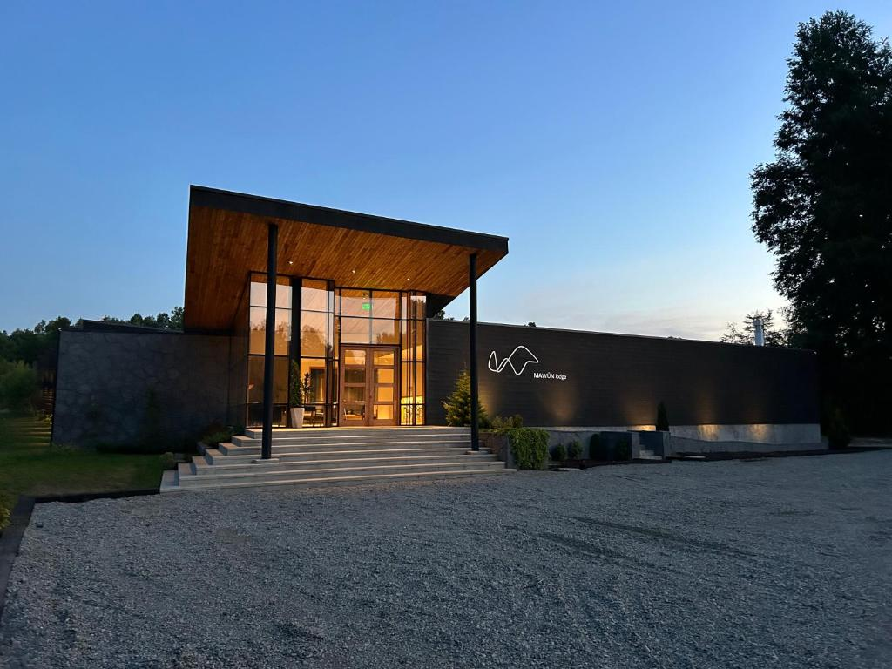

Apartamento Sol
Barcelona, España
Edición 2025 — Interiores
Redefiniendo el lujo moderno a través de la sustracción. Creamos espacios que respiran, donde la luz es el material principal y el silencio es el objetivo.
Ver Portfolio
— Jusepa Estudio
Barcelona, España
Una exploración de texturas naturales y luz difusa. El hormigón se encuentra con el lino.
Ver caso de estudioNew York, USA

Tulum, México
Desde la concepción arquitectónica hasta la selección de la última pieza de arte. Nos especializamos en proyectos "llave en mano" para clientes que valoran la atemporalidad.
Redistribución de espacios y optimización de flujos.
Piezas a medida diseñadas exclusivamente para su espacio.
Curaduría de obras que dialogan con la arquitectura.
El toque final que aporta vida y carácter.